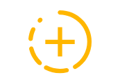
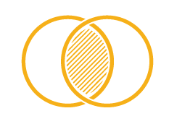
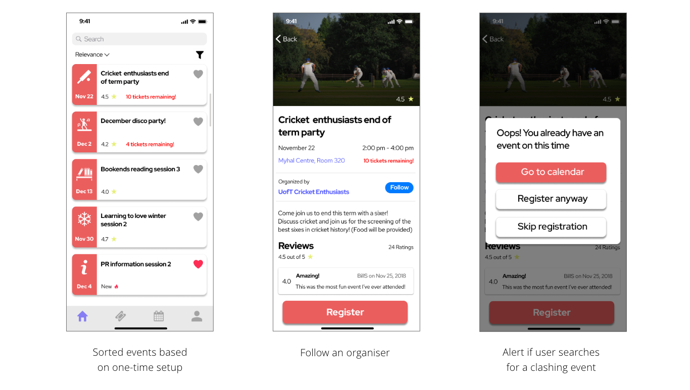

Campus Social
Student Social Life Development at UofT
Team Akriti Kaur, Megha Singal, Zahir Punjani, Angela Cao
Aim Understand Design thinking process, identify and solve a UofT student issue
Duration Oct - Dec'19
Guide Prof. Olivier St-Cyr
Presentation Designer

Storyteller
User Researcher
Team Diversity = Diverse ideas
Meetings have got to be short
Use effective visual aids for storytelling
User testing is the solution to all arguments
Convey your presentation, don’t make them read
Sameed is a new grad student joining UofT, St.George campus. He is really excited about School in a new city. He is a social person, loves meeting people from different backgrounds until his interests match with them. He is looking forward to making memories and close friends he can trust.
Meeting like-minded people, building connection
is a UofT-wide issue
7/12
(User interviews)
“Classes & study groups are easiest
ways to make friends”
8/12
(User interviews)
“We are open to making friends from different backgrounds ”
28/40
(User survey)
Participants talk to friends
in anxiety or stress
34/40
(User survey)
Student experience of meeting like-minded people needs improvement
User statements
“As a UofT student, I want to manage my studies as well as meet a
diverse group of students, so that I can make friends and share my experiences”

Meet like-minded people
Manage academics
Build connections
Our team followed IBM guidelines to write Hill statements, meaningful outcomes we want to achieve. A Hill statement consists of "Who" (who are the users), "What" (what is the user's need), and "Wow" (measurement of success)
1. Sameed can find relevant events with as little as one-time preference and schedule setup
2. Sameed can make an informed decision about choosing & attending events without checking multiple sources
3. Sameed can enjoy a good on-campus social life without affecting academics
1. Login using UofT Acorn, one-time setup of the app
2. Home screen, event search
3. Your events
4. Calendar
5. Profile settings
Semi-structured interviews and questionnaire based testing was conducted with 4 UofT grad students. Task-based Think Aloud protocol was followed. Participants were tested for task performance, efficiency and error rates. User testing was performed on Low-Fi prototype, feedback was incorporated to build the Mid-Fi. These are some statements from Mid-Fi user testing.
If I were given more time and opportunity to continue this project, I would: